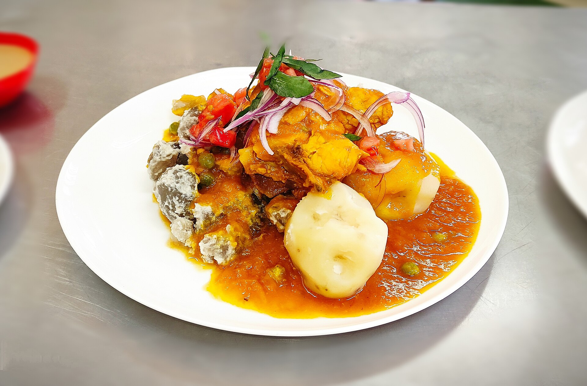

Home
Sajta de pollo
Difficultad: Media

La sajta de pollo es un estofado tradicional y picante de la región andina de Bolivia, especialmente representativo de la cultura culinaria de La Paz, elaborado con presas de pollo cocinadas en una salsa de ají amarillo y acompañado de papa, tunta o chuño con maní, y ensalada fresca.
Ingredientes
- 10 g arveja
- 10 g tunta (papa deshidratada)
- 2 g ají en vaina amarillo
- 6 g tomate
- 5 g cebolla
- 1 g perejil
- 15 g pollo
- 10 g papa
- Sal
- Pimienta
- Laurel
Preparación
- Brasear el ají amarillo en vaina hasta que quede semi negrito y en una olla hacer hervir el ají por 10 min y reservar
- Hacer un fondo de pollo con mermas de verduras y cáscara de la cebolla hasta que esté este a punto de ebullición
- Cortar la cebolla en corte pluma y cisele y el tomate en brunoise (dados)
- Coger nuestro ají y despepitar quitando las pepitas que este contiene adentro suyo y llevar a procesar junto con nuestras cebollas caramelizadas en corte ciselado y un ajito y reservar
- Procesar nuestro maní blanco con una licuadora o mixer con un poco de agua hasta que no queden grumos
- Llevar a sartén nuestro maní con un poco de agua hasta que esté reduzca tenga una consistencia de cremita
- Sancochar nuestra papa deshidratada (tunta) y rebozar con nuestro maní y reservar
- Sacar nuestra presa de pollo de nuestro fondo y reservar
- Con nuestro ají ya procesado llevar a sartén con un poco de aceite y agregar poco a poco nuestro fondo de pollo y salpimentar, hoja de laurel, agregar nuestra presa de pollo a gusto hasta que reduzca y tenga consistencia de salsa (cuidado con sobre cocinar nuestro pollo)
- Escaldar arverjas (opcional)y después cortar cocción con agua fría
- Sancochar papas
- Emplatar